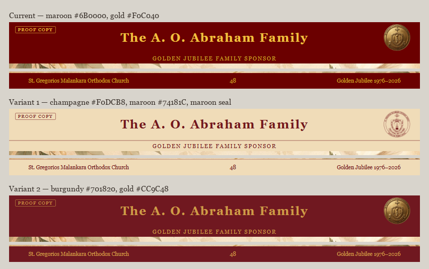
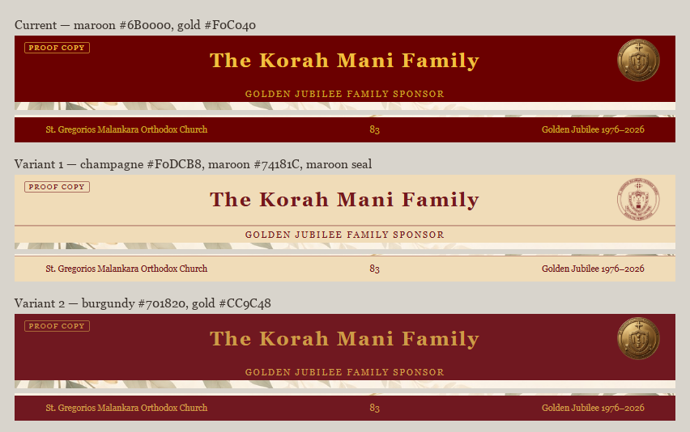
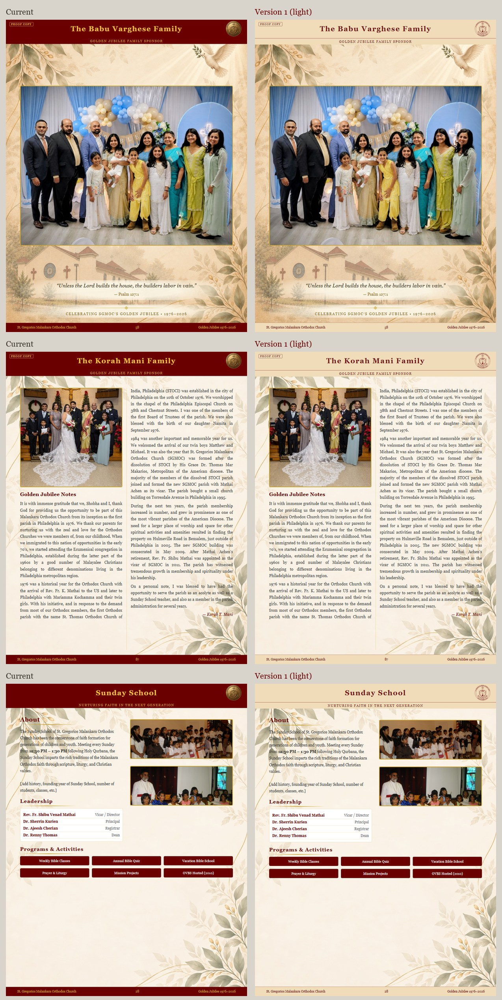
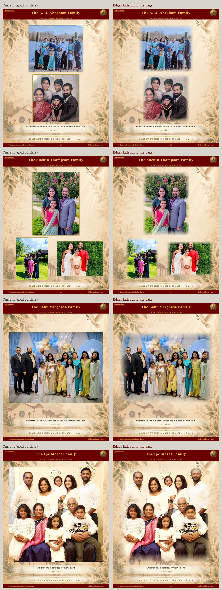
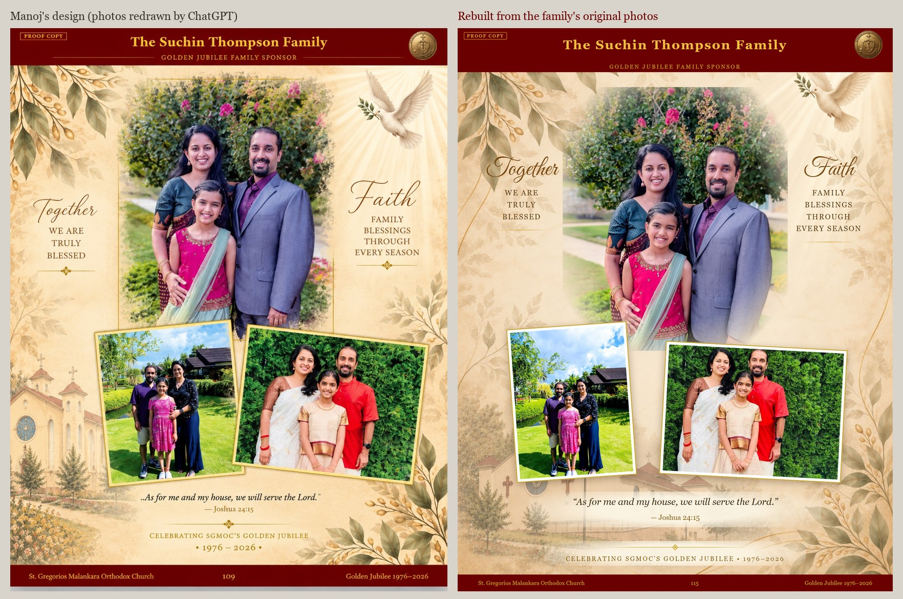

"I can identify a texture in terms of cropping and maximizing, what meant was for example this is feel like there is space on top and bottom for both images landscape top and bottom might use up most space… When there is extra space on bottom maybe can use filler verses… we try picture on the top left writing maybe starts below and whole right side. Like inline"
Manoj Chacko · WhatsApp · 15 Sept, 10:06–10:15 PM
So "texture" meant filling the page, not a background material. Three rules came out of it, and they are now part of the build rather than one-off edits — any new family page gets them automatically.
Filler verse
Where a photo leaves a band at the bottom, a verse fills it, set larger than before. Eight verses rotate so neighbouring pages don't repeat.
17 pagesCrop to fill
The photo covers its whole box instead of letterboxing — but only where cropping cuts nobody off. Automatic centre-cropping fails on large groups, so it is opt-in per page.
1 page so farInline
Photo at the top left, writing starting below it and running down the whole right side, exactly as in the page he sent. It needs about 2,200 words’ worth of characters to fill both columns.
2 pagesPhoto takes the slack
Where there is less writing than that, inline leaves the bottom third empty and pins the photo to one column. Instead the photo runs the full width and grows into whatever height the writing does not use, with the text in two bare columns below it.
9 pagesHis own background
On 16 September he sent the artwork itself — aged paper, gold and green leaf corners, the SGMOC building, a dove. It replaces the ornament I had drawn. It now runs on every page but the cover and back cover, with his plainer leaf version behind the text-heavy ones, and a gold rule with a centred diamond above each closing line.
All pages but the coversWhat the rules do to real pages
Left is the page as it stands today; right is the same page rebuilt. Page numbers are unchanged.


Two header and footer colour schemes
"I want to see how this looks can you try two different versions for the header footer. 1. Empowering the present section as the background and text color as the color for the text. We can use maroon logo for the logo. 2. Pilgrimage text color as the background and one these lighter brown or gold color for text."
Manoj Chacko · WhatsApp · 16 Sept, 9:54 PM
Both sets of colours are sampled from the PILGRIMAGE poster he sent: the champagne of the "Empowering the present" ribbon with its maroon lettering, and the burgundy of the PILGRIMAGE wordmark with the gold of its scrollwork. Only the bars change — nothing else on the page moves. Neither is applied to the souvenir; this page is the only place they exist.
Champagne bars
Background #F0DCB8 with #74181C type, and the seal in maroon line art instead of gold — the gold seal is a sculpted relief, so tinting that one turns to mud at this size. It inverts today's scheme: light bars, dark type. Worth noticing that the champagne sits close in tone to the cream page, so the pages lose some of their framing.
Not appliedBurgundy bars
Background #701820 with #CC9C48 type, gold seal unchanged. The same light-on-dark arrangement as today, but his warmer burgundy rather than our #6B0000 and a deeper gold than #F0C040. That gold on that burgundy is about 3.9:1 — comfortable at the 18pt title, marginal on the 8pt footer line.
Not applied

Version 1 on full pages
"I think light version looks good but can we see it in whole page with body to see which flows better?"
Manoj Chacko · WhatsApp · 17 Sept, 6:54 AM
The same three pages in the current colours and in version 1: a family photo page, a writing page, and a hand-built ministry page. Only the header, sponsor band and footer change. Not applied to the souvenir.

Photo edges faded into the page
"All member pages when being generated ask to blend photo edges to the page which will remove the borders."
Manoj Chacko · WhatsApp · 17 Sept, 6:54 AM
The gold border is removed and each photo fades into the background over its outer edge. It is one stylesheet change, so it can go on every family page at once. The photos themselves are not altered. Not applied to the souvenir.

His page style, rebuilt from the original photos
Manoj designed eight pages in a new style: the main photo faded into the background, smaller photos tilted and overlapping, short phrases in script on each side, and a verse. His images can't go into the book directly. At about 130 dpi they would print soft, the header and page number are part of the image, and the photos were redrawn by ChatGPT. Here is the Suchin Thompson page rebuilt the same way, using the family's own unaltered photos at full resolution.

What I could not decide automatically
- Two crops need choosing by handA. O. Abraham and Jacob George. Cropping there is a judgment about which faces may leave the frame — tell me the crop and it takes a minute, or Manoj can send his cropped files.
- Which background, and where?He sent eight variants — dove or cross, the SGMOC building or a domed church, and one plain leaf version. The dove-and-church one is on the photo pages and the plain leaf behind the writing; the ministry pages still take the church version, which is heavy behind a dense layout like Sunday School.
- Duplicate photosStill waiting on his list, and on the revised pictures he mentioned.
- The seven April pagesUnanswered from last night: rebuild them on the new templates, and do the family-designed colour pages stay as submitted?